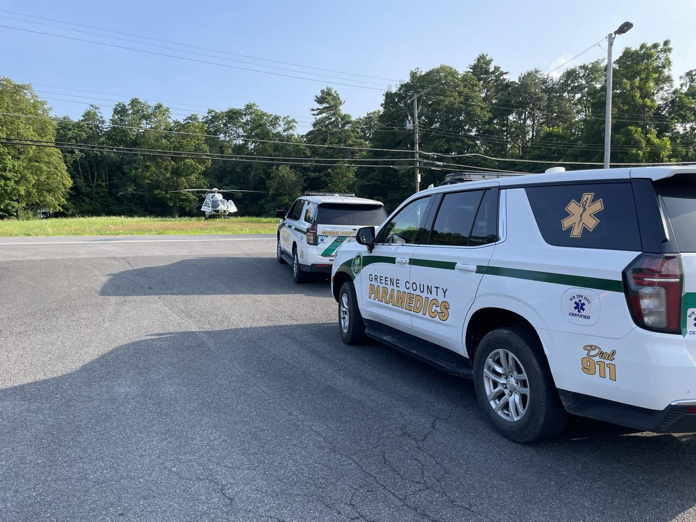
Built because
the county needed it.
Twenty-six years and counting: five stations, six units, and a mission that hasn't changed since the first unit went in service.
Why we exist
To provide the highest level of exemplary pre-hospital clinical care to the residents and guests of Greene County, in a safe and professional manner, through a team of knowledgeable, skillful and caring certified EMS providers.
From a patchwork to a system
In the late 1990s, emergency medical care in Greene County was a patchwork of volunteer rescue squads and contracted commercial paramedic ambulances. Volunteerism was declining and the private services were unreliable. Something more needed to be done.
Greene County Emergency Medical Systems, Inc. (most people call us Greene EMS or Greene County Paramedics) was formed as a 501(c)(3) not-for-profit with the support of the Greene County Rural Health Network, to provide reliable advanced life support to the residents and visitors of Greene County.
Two paramedic units, covering the mountaintop and the Town of Cairo, went in service on August 1, 2000. They answered 550 calls that first year. A third unit and the Town of Catskill followed in 2001; by 2004 every township had signed on to the fly car system and four paramedics were operating around the clock. As call volume grew, the part-time administrator became a full-time Chief of Operations in 2007. In April 2020, Medic 8 went in service at Prattsville Hose Company as the fifth full-time unit, serving the most rural part of the county, where hospital transports routinely run an hour or more.
Today, Greene EMS fields some of the most highly trained, best equipped and technologically advanced paramedics in New York State.
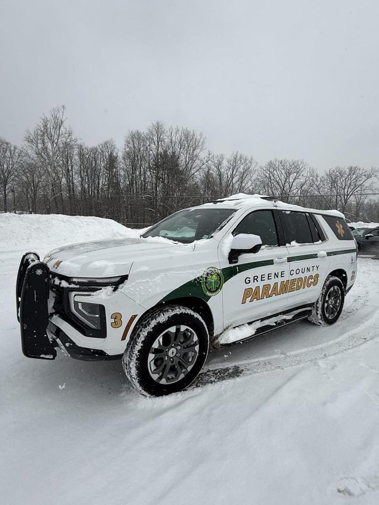
The same job, better tools every decade
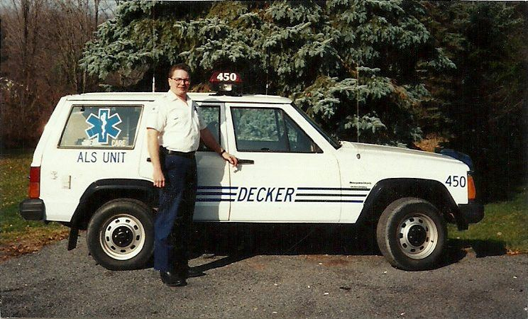
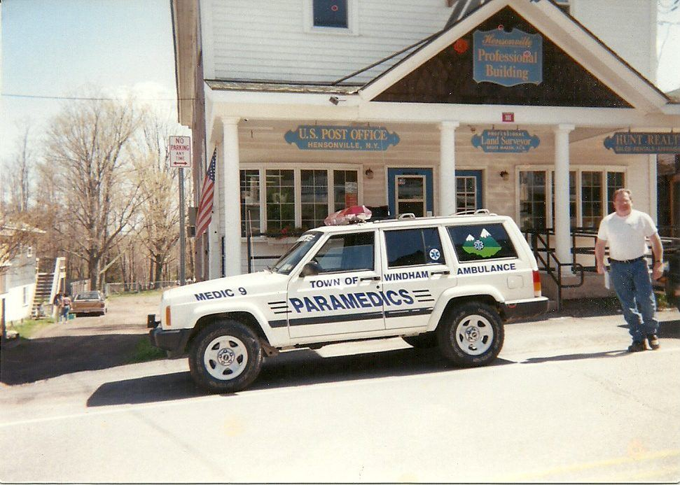
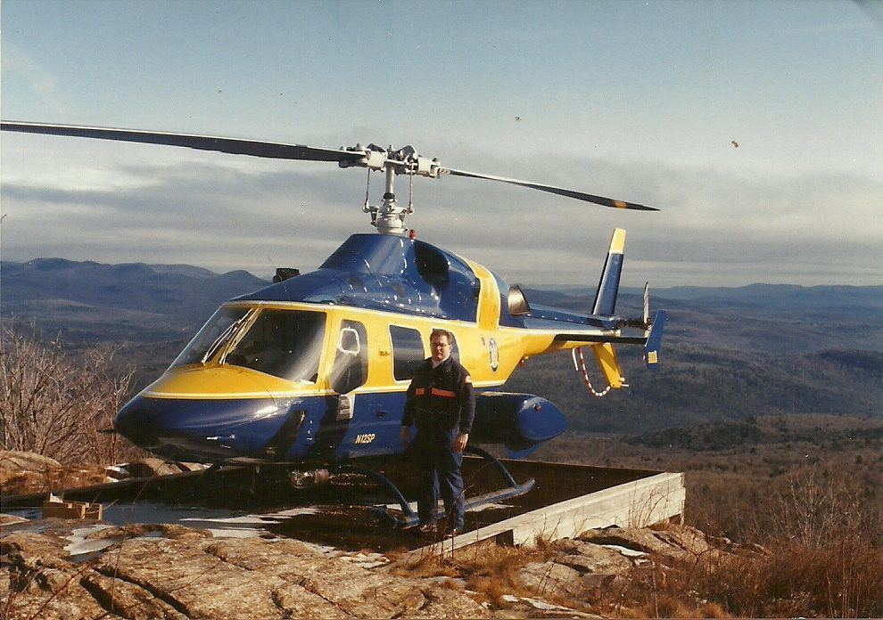
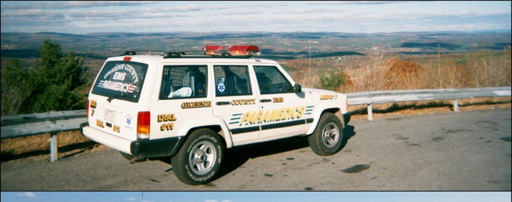

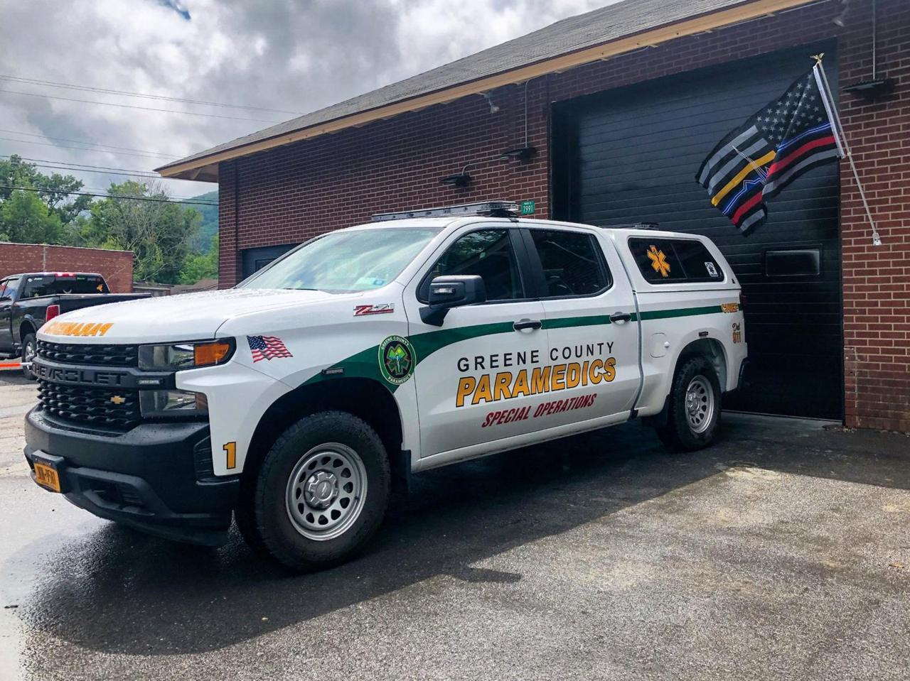
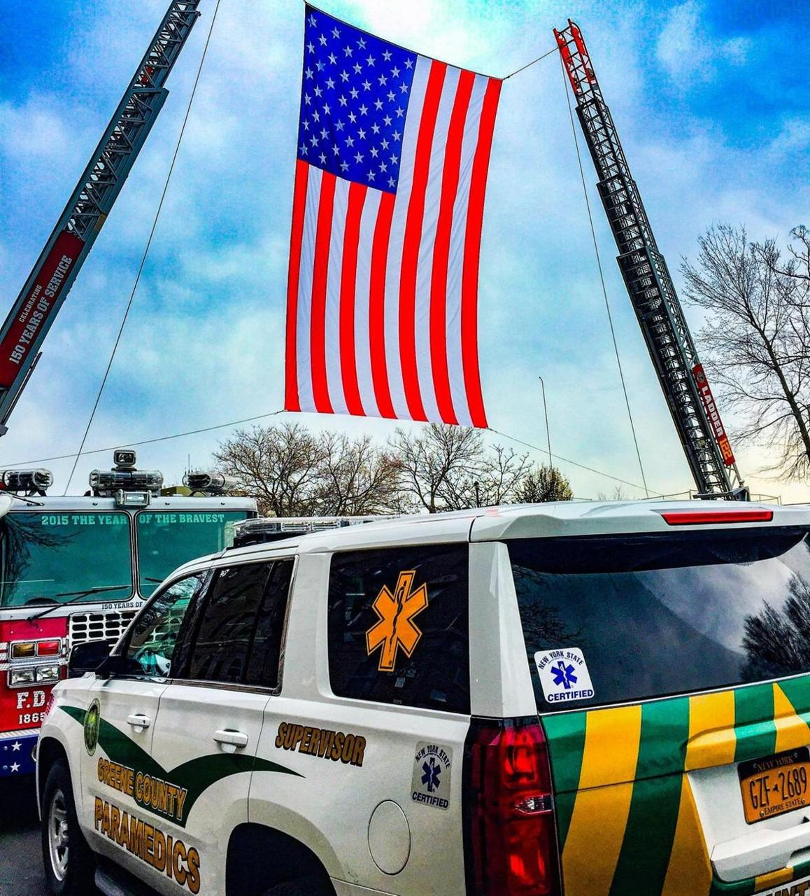
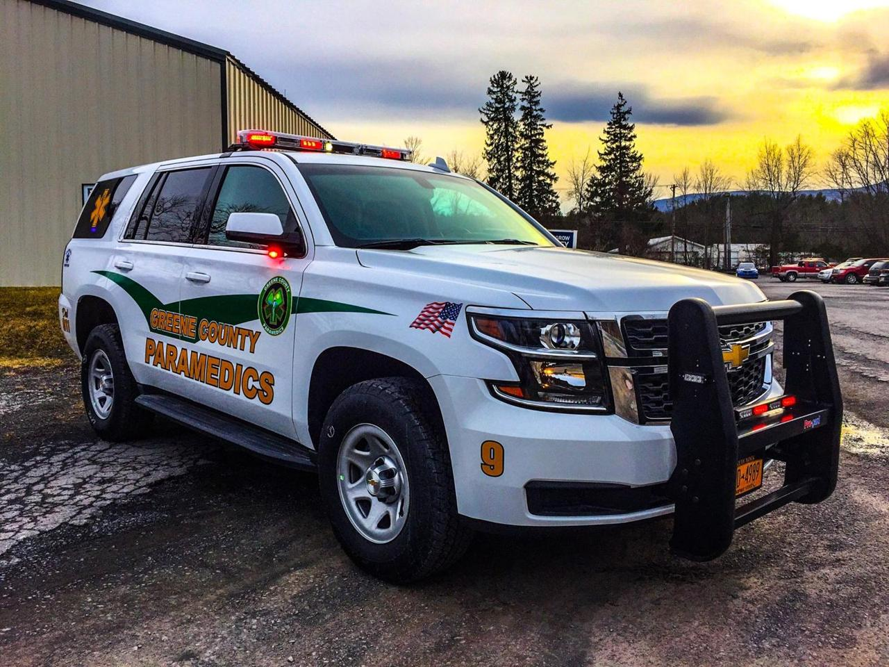
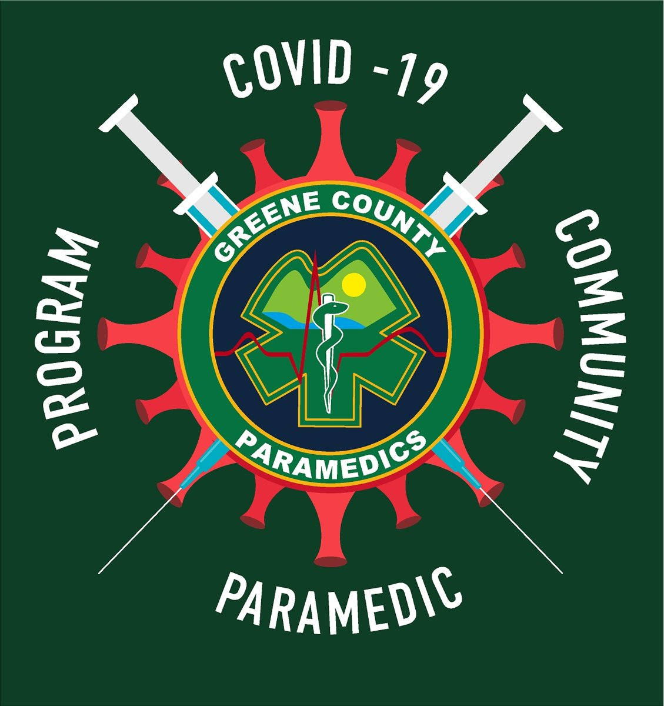
2020 to 2021A different kind of call
During the pandemic our paramedics stepped out of the fly cars and into gowns and face shields, staffing Greene County's COVID-19 vaccination PODs and vaccinating residents in nursing homes and community sites across the county. It was community paramedicine before we had a name for it. The emblem on the left is the one we wore for it.
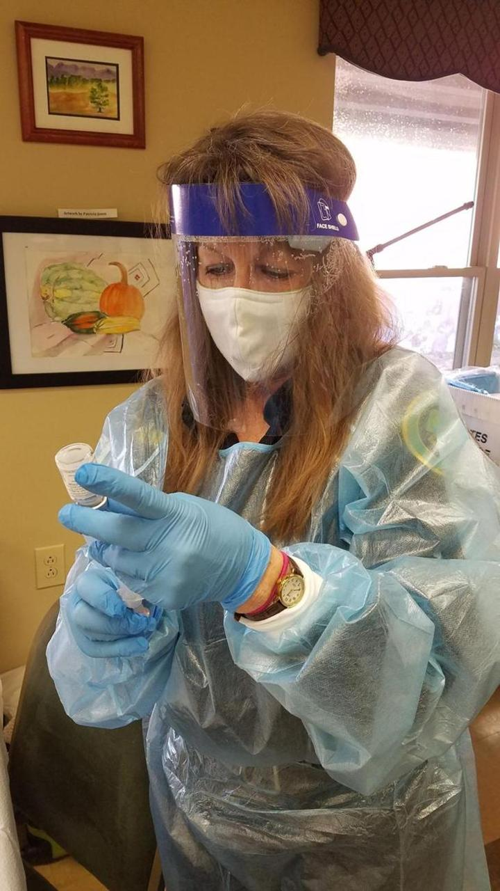
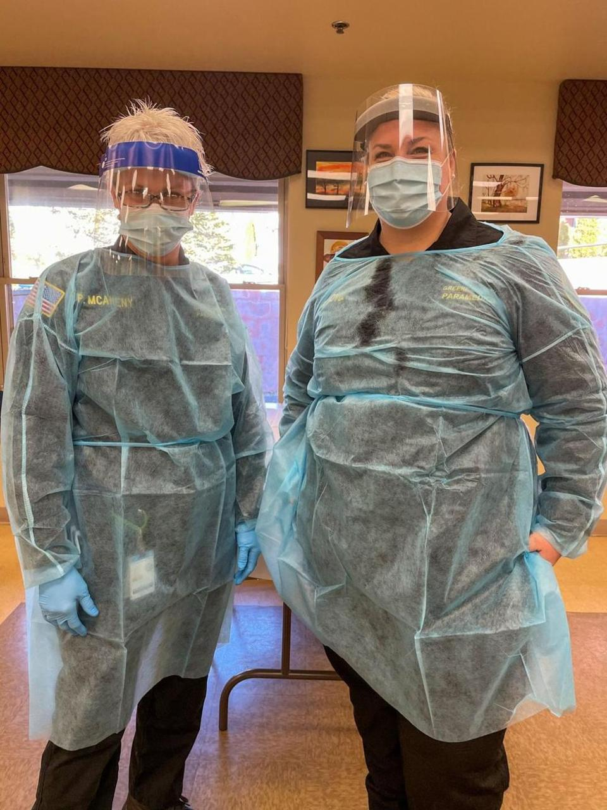
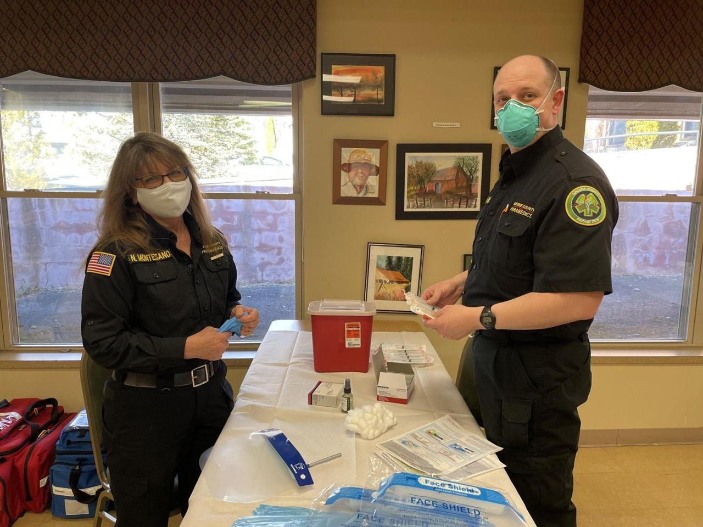
The fly car system in Greene County shows that a tiered EMS response can cover a vast, rural county without downgrading the care or the equipment that reaches the patient's bedside. Greene EMS is a proven concept with more than twenty-five years behind it, and we are at the tip of the spear in pushing EMS care forward in the field.
Steve Near, Chief of Operations · October 2026Twenty-six years ahead of the report
The New York State Rural Ambulance Services Task Force was created by the Legislature in 2021 to study rural EMS. Its report came out in March 2026.
The report describes rural EMS in New York as "teetering on the brink of collapse." Response times "vary from minutes to more than an hour in many locations." Only about 44 percent of certified EMS providers were actively practicing in 2023. Nearly 30 percent of patients are treated and not transported, which most insurance does not pay for. And, in the report's words, "an EMS agency does not create revenue for being ready."
Of its 38 proposals, number 8 is to "develop tiered response systems (CFR, BLS Ambulance, ALS, Paramedic Fly car) across the state with the use of the closest, most appropriately staffed ambulance." The report says fly cars preserve paramedic care for the calls that need it, and may keep paramedics in the field longer.
That is the system Greene County built in 2000: a local ambulance on every call, and a paramedic in a fly car when the call needs one. A non-transporting agency, covering thirteen towns from five stations, that answered 4,125 calls in 2025.
Read the full report"Tiered response models consisting of BLS transporting units and ALS non transporting EMS vehicles may greatly increase response capabilities and create more resilient response systems by preserving ALS level care for when it is needed."
NYS Report on Rural Ambulance Services, page 24"Studies have shown a direct correlation between shorter ambulance response times and increased survival in cardiac arrests that happen at home."
NYS Report on Rural Ambulance Services, page 45The people running it
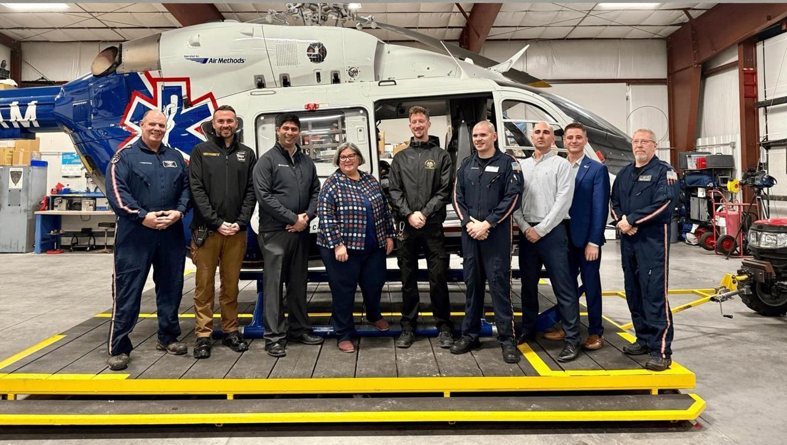
Chief Near (center right) pictured with a New York State Assemblywoman, physicians, and LifeNet staff, discussing prehospital blood in New York State.
93A County Route 84, Cairo, NY 12413 · (518) 622-8092 · Chief@greene-ems.com